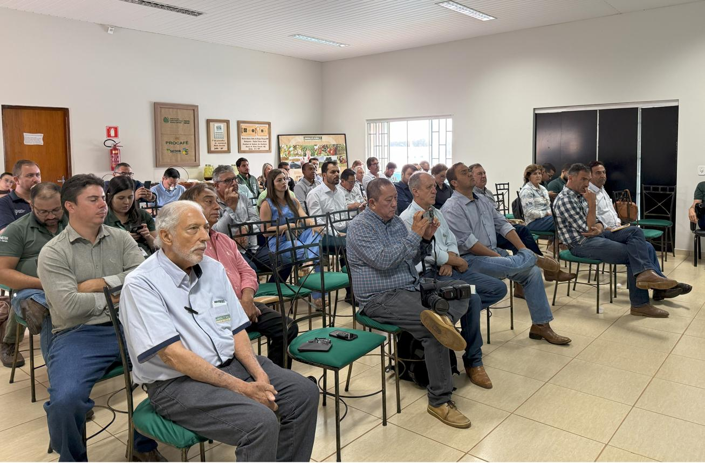

O café na vida dos brasileiros
No Brasil, tomar café é muito mais do que consumir uma bebida. O cafezinho acompanha encontros, conversas, visitas, intervalos de trabalho e momentos em família. Em muitas casas, oferecer café é também uma forma de acolhimento e hospitalidade.

Costumes e tradições
O café coado é uma preparação tradicional em diversas regiões. Também são populares o café com leite, o pingado, o cafezinho servido em pequenas xícaras e receitas regionais. Cada família pode ter seu próprio modo de preparar e servir a bebida, transmitido entre gerações.
O crescimento das cafeterias e dos cafés especiais
Nos últimos anos, o interesse por cafés especiais ampliou a procura por informações sobre origem, variedade, torra e métodos de preparo. Cafeterias apresentam opções como espresso, coado, prensa francesa e bebidas geladas. Essa diversidade permite que o consumidor experimente diferentes aromas, texturas e intensidades.
O café na arte e na convivência
A bebida aparece em músicas, obras literárias, fotografias, pinturas e cenas do cotidiano. O espaço da cafeteria também pode funcionar como local de estudo, trabalho, conversa e encontro entre pessoas. Assim, o café ultrapassa a dimensão agrícola e comercial e participa da identidade cultural brasileira.
Valorizar toda a cadeia
Reconhecer a cultura do café também significa valorizar quem participa de sua produção: agricultores, trabalhadores, pesquisadores, cooperativas, baristas, comerciantes e profissionais da indústria. Conhecer a origem do produto ajuda a compreender o esforço necessário para que ele chegue à xícara.